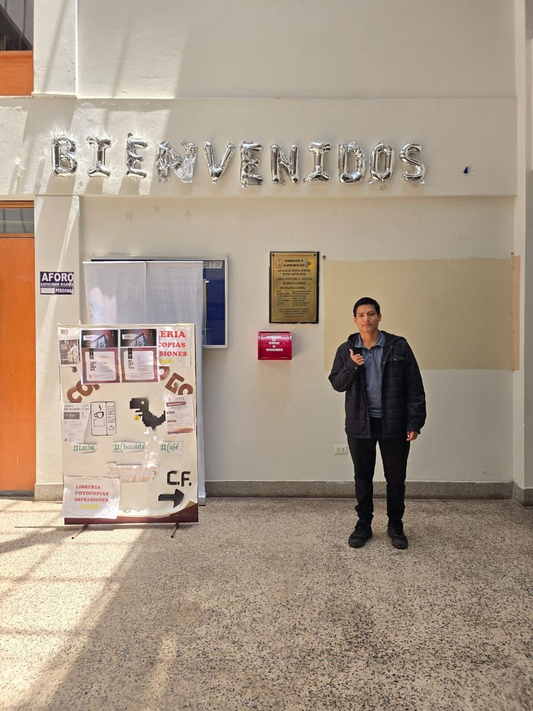

1 – 30 de septiembre de 2026
Pasantía nacional en Cusco
Participé en una pasantía nacional y pasé todo septiembre en Cusco, en la Universidad Nacional de San Antonio Abad. Fue un mes lejos de casa, en otra universidad y en otra ciudad.
Además de lo académico, tuve tiempo para conocer un poco de Cusco. La laguna de la tercera foto fue uno de esos días.
